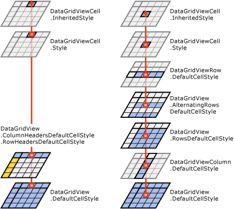
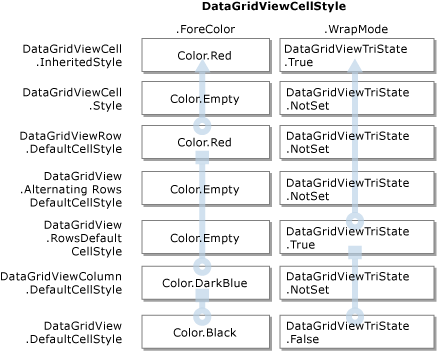

Стили ячеек элемента управления DataGridView в Windows Forms
Каждая ячейка в DataGridView элемент управления может иметь свой собственный стиль, включая формат текста, цвет фона, цвет переднего плана и шрифта. Как правило Однако несколько ячеек будет обладают одинаковым стилем.
Группы ячеек, которые совместно используют стили могут включать все ячейки в пределах конкретных строк или столбцов, все ячейки, содержащие конкретные значения или все ячейки в элементе управления. Так как эти группы перекрываются, каждая ячейка может получать данные своего стиля из более чем в одном месте. Например, может потребоваться каждая ячейка DataGridView элемент управления же шрифт, но только ячейки в столбцах для использования формат денежной единицы и только ячейки валюты с отрицательными числами для использования красный цвет.
Класс DataGridViewCellStyle
DataGridViewCellStyle Класс содержит следующие свойства, относящиеся к стилю:
Этот класс также содержит следующие свойства, связанные с форматированием:
Дополнительные сведения об этих свойствах и другие свойства стиля ячейки, см. в разделе DataGridViewCellStyle справочную документацию и разделы, перечисленные в разделе также см. в разделе ниже.
Использование объектов DataGridViewCellStyle
Вы можете получить DataGridViewCellStyle объектов из различных свойств DataGridView, DataGridViewColumn, DataGridViewRow, и DataGridViewCell классы и их производных классов. Если одно из этих свойств еще не было задано, его значение было получено создаст новый DataGridViewCellStyle объекта. Можно также создать свои собственные DataGridViewCellStyle объектов и назначить их этих свойств.
Можно избежать дублирования информации о стилях, предоставив DataGridViewCellStyle объектов между несколькими DataGridView элементов. Так как стили заданы элемента управления, столбца и фильтра строк уровней вниз через каждый уровень на уровне ячейки, можно избежать дублирования стилей, задав только те свойства стиля на каждом уровне, отличные от более высоких уровнях. Это описывается более подробно в следующем разделе наследования стиля.
В следующей таблице перечислены основные свойства, устанавливающие или получающие DataGridViewCellStyle объектов.
| Свойство | Классы | Описание |
|---|---|---|
DefaultCellStyle |
DataGridView, DataGridViewColumn, DataGridViewRowи производные классы | Возвращает или задает стили по умолчанию, используемые все ячейки в весь элемент управления, включая ячейки заголовков, в столбце или в строке. |
| RowsDefaultCellStyle | DataGridView | Возвращает или задает стили ячеек по умолчанию, используемые во всех строк в элементе управления. Сюда не входят ячейки заголовков. |
| AlternatingRowsDefaultCellStyle | DataGridView | Возвращает или задает стили ячеек по умолчанию, используемые чередующихся строк в элементе управления. Используется для создания эффекта бухгалтерской книги. |
| RowHeadersDefaultCellStyle | DataGridView | Возвращает или задает стили ячеек по умолчанию, используемые заголовки строк элемента управления. Переопределить текущей темы, если стили оформления включены. |
| ColumnHeadersDefaultCellStyle | DataGridView | Возвращает или задает стили ячеек по умолчанию, используемые заголовков столбцов элемента управления. Переопределить текущей темы, если стили оформления включены. |
| Style | DataGridViewCell и производные классы | Возвращает или задает стили, заданные на уровне ячейки. Эти стили переопределить унаследованные от более высоких уровней. |
InheritedStyle |
DataGridViewCell, DataGridViewRow, DataGridViewColumnи производные классы | Получает все стили, примененных в настоящий момент для ячейки, строки или столбца, включая стили, унаследованные от более высоких уровнях. |
Как упоминалось выше, получение значения свойства стиля автоматически создает новый экземпляр DataGridViewCellStyle объекта, если свойство не было задано ранее. Чтобы избежать без необходимости создания этих объектов, строк и столбцов классы имеют HasDefaultCellStyle свойство, которое можно проверить, чтобы определить ли DefaultCellStyle свойства. Аналогично, классы ячейки имеют HasStyle свойство, указывающее ли Style свойства.
Каждое из свойств стиля имеет соответствующий PropertyName Changed событий на DataGridView элемента управления. Для строк, столбцов и свойств ячеек, имя события начинается с "Row«,»Column«, или"Cell"(например, RowDefaultCellStyleChanged). Каждое из этих событий происходит, когда соответствующее свойство стиля присваивается другой DataGridViewCellStyle объекта. Эти события не происходят при извлечении DataGridViewCellStyle объекта из свойства стиля и изменении значений его свойств. Реагировать на изменения к самим объектам стиль ячейки, обрабатывать CellStyleContentChanged событий.
Наследование стилей
Каждый DataGridViewCell получает его внешний вид, от его InheritedStyle свойство. DataGridViewCellStyle Объект, возвращаемый этим свойством наследует значения из иерархии свойств типа DataGridViewCellStyle. Эти свойства перечислены ниже в порядке, в котором InheritedStyle для верхнего колонтитула ячеек получает свои значения.
DataGridView.AlternatingRowsDefaultCellStyle (только для ячеек в строках нечетных)
Для ячеек заголовков строк и столбцов InheritedStyle свойство заполняется значениями из следующего списка исходных свойств в заданном порядке.
Следующая диаграмма иллюстрирует этот процесс.

Также можно получить доступ к стилям, унаследованным от определенных строк и столбцов. Столбец InheritedStyle свойство наследует значения от следующие свойства.
Строки InheritedStyle свойство наследует значения от следующие свойства.
DataGridView.AlternatingRowsDefaultCellStyle (только для ячеек в строках нечетных)
Для каждого свойства DataGridViewCellStyle объект, возвращаемый InheritedStyle свойство, значение свойства получено из первого стиля ячейки в соответствующем списке, имеющий соответствующее свойство присвоено значение, отличное от DataGridViewCellStyle класса значения по умолчанию.
В следующей таблице показано как ForeColor унаследован от столбца, в котором значение свойства ячейка.
свойство типа DataGridViewCellStyle |
Пример ForeColor значение для полученного объекта |
|---|---|
| DataGridViewCell.Style | Color.Empty |
| DataGridViewRow.DefaultCellStyle | Color.Red |
| DataGridView.AlternatingRowsDefaultCellStyle | Color.Empty |
| DataGridView.RowsDefaultCellStyle | Color.Empty |
| DataGridViewColumn.DefaultCellStyle | Color.DarkBlue |
| DataGridView.DefaultCellStyle | Color.Black |
В этом случае Color.Red значение из строки ячейки является первым действительным значением в списке. Это становится ForeColor значение свойства ячейки InheritedStyle.
На следующей схеме показано как разные DataGridViewCellStyle свойства могут наследовать значения из различных мест.

Используя преимущества наследования стиля, можно предоставить соответствующие стили для всего элемента управления без необходимости указывать те же данные в нескольких местах.
Несмотря на то, что ячейки заголовка участвуют в наследовании style, как описано, объекты, возвращаемые ColumnHeadersDefaultCellStyle и RowHeadersDefaultCellStyle свойства DataGridView элемент управления имеет исходные значения свойств, которые переопределяют значения свойств объекта, возвращаемого DefaultCellStyle свойство. Если необходимо, чтобы свойства, заданные для объекта, возвращаемого DefaultCellStyle свойство для применения к заголовки строк и столбцов, необходимо задать соответствующие свойства объектов, возвращенных ColumnHeadersDefaultCellStyle и RowHeadersDefaultCellStyle указанного свойства по умолчанию для DataGridViewCellStyle класса.
Note
Если стили оформления включены, заголовки строк и столбцов (за исключением TopLeftHeaderCell) автоматически определяются текущей темы, заменяя все стили, указанные для этих свойств.
DataGridViewButtonColumn, DataGridViewImageColumn, И DataGridViewCheckBoxColumn типы также инициализируют некоторые значения объекта, возвращаемого в столбце DefaultCellStyle свойство. Дополнительные сведения см. в справочной документации для этих типов.
Динамическая установка стилей
Чтобы настроить стили ячеек с определенными значениями, Реализуйте обработчик DataGridView.CellFormatting событий. Обработчики для этого события получают аргумент DataGridViewCellFormattingEventArgs типа. Этот объект содержит свойства, позволяющие определить значение ячейки, подлежащего форматированию вместе с ним месте в DataGridView элемента управления. Этот объект также содержит CellStyle свойство, которое инициализируется значение InheritedStyle свойство форматируемой ячейки. Можно изменить свойства стиля ячейки, чтобы указать сведения о стиле, подходящие для значения ячейки и расположение.
Note
RowPrePaint И RowPostPaint события также получения DataGridViewCellStyle данных объектов событий, но в их случае это копия строки InheritedStyle свойство только для чтения и изменения не влияют на элемент управления.
Можно также динамически изменять стили вид отдельных ячеек в ответ на события например DataGridView.CellMouseEnter и CellMouseLeave события. Например, в обработчике CellMouseEnter событий, можно сохранить текущее значение цвет фона ячейки (извлечь с помощью ячейки Style свойства), установите его в новый цвет, который будут выделите ячейку, при наведении указателя мыши. В обработчике CellMouseLeave событий, вы сможете восстановить цвет фона в исходное значение.
Note
Кэширование значений, хранящихся в ячейки Style свойство важно независимо от установленного значения определенного стиля. Если временно заменить параметр стиля, его восстановление в исходное состояние «не установлено» гарантирует, что ячейки вернется к наследовать этот параметр стиля с более высокого уровня. Если вам нужно определить текущий стиль, установленный для ячейки независимо от того, наследуется ли стиль, используем свойство ячейки InheritedStyle свойство.
См. также
- DataGridView
- DataGridViewCellStyle
- DataGridView.AlternatingRowsDefaultCellStyle
- DataGridView.ColumnHeadersDefaultCellStyle
- DataGridView.DefaultCellStyle
- DataGridView.RowHeadersDefaultCellStyle
- DataGridView.RowsDefaultCellStyle
- DataGridViewBand.InheritedStyle
- DataGridViewRow.InheritedStyle
- DataGridViewColumn.InheritedStyle
- DataGridViewBand.DefaultCellStyle
- DataGridViewCell.InheritedStyle
- DataGridViewCell.Style
- DataGridView.CellFormatting
- DataGridView.CellStyleContentChanged
- DataGridView.RowPrePaint
- DataGridView.RowPostPaint
- Базовое форматирование и оформление элемента управления DataGridView в Windows Forms
- Практическое руководство. Установка стилей ячейки по умолчанию для элемента управления DataGridView в Windows Forms
- Форматирование данных в элементе управления DataGridView в Windows Forms